![[Any Browser, Any System, Any Time]](abasat.gif)
This website is compatible with Lynx, Netscape, or any other browser you may choose to use. For more information, see Best Viewed With Any Browser.
Non conu pour un fureteur particulier. Utilisez ce que vous voulez.


Welcome to the Palaestra --
an open-source wrestling roster, links, event and chat site
Recent UV photos
|
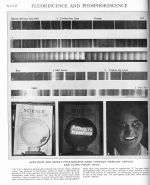 Plate from article by R. W. Wood (professor of Experimental Physics, Johns Hopkins University, Baltimore, MD) on UV fluorescence, 1929. |
The nickel oxide glass used in the bottom photos has
since been named after the article’s author; Wood’s glass blocks
“visible” light but lets through longwave UV-A and also infrared.
|
|
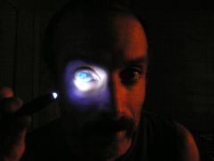 My eye lens converting UV-A light to green light; the same phenomenon as in photo 8 of the encyclopedia plate above, but in color this time. Thus little if any UV actually gets to the retina, though the retina can see UV-A and some UV-B when there is no lens in the way (aphakia, as discussed below). |
My teeth brightly reflecting UV light; also pictured in photo 8 of the encyclopedia article above. |
|
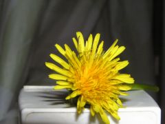 Dandelion viewed under visible light (incandescent room light plus camera flash, no filters) |
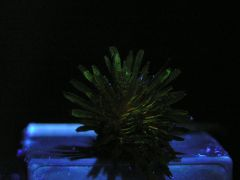 Dandelion viewed under ultraviolet light. Unretouched, taken in dark room with only illumination from 375 nm LED, with its visible output further filtered by Wood’s glass cutting off around 410 nm. |
|
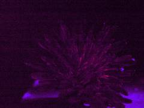 Dandelion viewed under same UV light, retouched with brightness, contrast and gamma adjusted, and green channel removed to emphasize bright UV-visible area in center which guides pollinating insects that are able to see such wavelengths. |
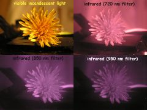 Dandelion viewed under infrared light. Unretouched, using incandescent light with the filter cutoffs as noted (wavelengths lower than that value are blocked). The visible-light photo has a reddish cast from the incandescent illumination. |
|
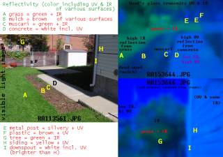 Key showing visible and enhanced IR-UV appearance of following images (click for larger image) |
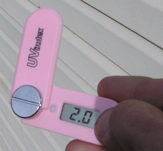 UV Index at 13:56:35 EDT on Nov. 1, 2008, agreeing with the NOAA/EPA forecast. Using UV Index meter model 691. |
| 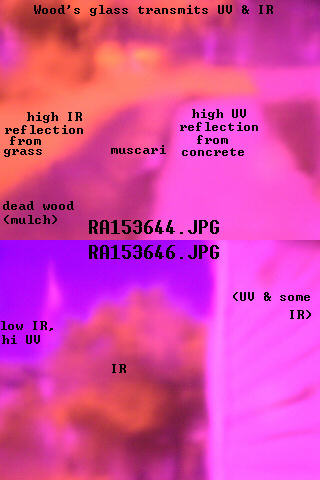 Raw image of walkway area at side of house, taken with C-750 camera through Wood’s glass. The violet areas are areas of high UV reflectivity and the reddish areas are areas of high IR reflectivity, much like what the camera sees through a Hoya R72 filter with the ultraviolet added. The photo is blurry because the Wood’s glass is not polished. |
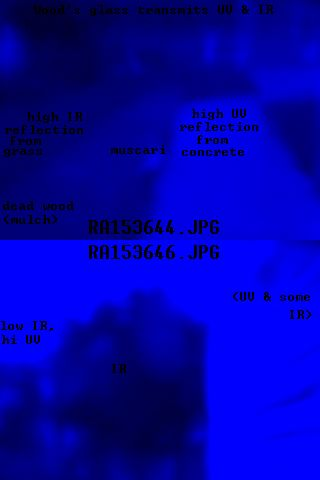 Same image with red and green channel removed, as the UV causes the blue channel of the camera to respond most strongly. Light areas are high-UV, dark areas are low-UV. |
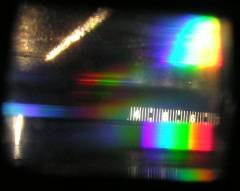 Camera-visible solar spectrum indoors through living-room window, appears as ~415-680 nm. 4:55 PM on October 9, 2008. At this date and hour, solar UV is likely to be rather low; the solar noon UV index is about 4 and the glass blocks virtually all UV-B and much of the UV-A. When the outdoor UV index was measured later in the month at 3.5, a reading of 1.0 was obtained behind this glass, with 0.0 in most of the rest of the house as would be expected. There is undoubtedly plenty of further red and infrared light which would be visible if I used an IR filter on the camera, but it is not visible at this shutter speed.The spectroscope’s linear scale has one line every 10 nm. The slit is also visible in the photo above. It is not covered by a lens or other object which would filter out IR or UV. Viewing a mercury spectrum shows that it is 10 nm off, e.g. when centered on the “5” it is actually 490, not 500, nm. The 404 and 436-nm mercury lines are particularly useful as a reference by eye, though it is the latter which shows up best in the spectrum photographs below. |
|
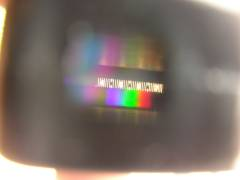 Camera-visible solar spectrum outdoors reflecting off concrete at 1 PM on October 15, 2008. At this brightness, the camera doesn’t record the wavelengths at each extreme, showing a spectrum only from 420 to 660 nm, but with my eyes I see a spectrum from 410 to 700 nm. If the bright visible light is removed, then the invisible extremes become visible. |
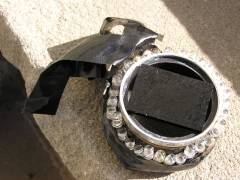 Preparing a Wood’s glass filter for C-750 camera, cheaper than most dedicated UV filters, blocks visible light but lets through IR & UV. |
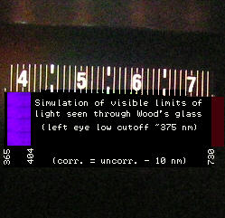 Spectral limits of my eye; this simulated image is what I see when viewing the 375 nm LED and an incandescent bulb through Wood’s glass. Blocking the visible light from an incandescent bulb allows my eye to see up to 790 nm. |
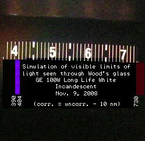 Visible IR & UV from a GE 100W Long Life White incandescent. This bulb is bare to maximize the small amount of transmitted UV-A. The usual IR spectrum extends from the eye-visible Wood’s glass cutoff at 730 nm up to the high 700’s. |
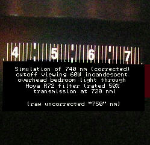 Spectrum of a 60W incandescent light as seen by eye through Hoya R72 infrared filter. It is supposed to have a cutoff at 720 nm but for my eyes the cutoff is 740 nm, which is 10 nm above that of Wood’s glass in the previous photo. Nothing can be seen through the 850 and 950 nm filters by eye. |
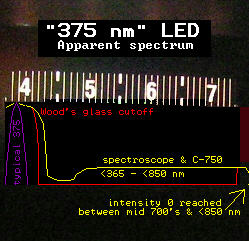 This is why the later experiments with the 375 nm LED use Wood’s glass in front of the LED to block out visible light. Viewed through the spectroscope, the LED does have a strong peak at or near its rated 375 nm specification, but it also emits a decreasing amount of light in the low 400’s, and there is also a dim emission of visible light, with no infrared visible through the Wood’s glass, but a slight amount of IR between 720 and 850 nm visible with the camera only (the 850 nm filter blocks all its light output). |
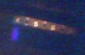 My Ezonics webcam is a little more sensitive to invisible light than the C-750 camera, though the resolution’s not as good. This image is what it sees through the spectroscope of the 375 nm LED filtered through Wood’s glass. |
|
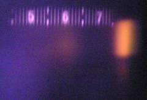 Incandescent IR spectrum seen by C-750. Hoya R72 filter, using 100W Philips incandescent bulb as light source. |
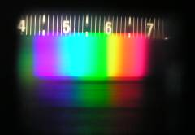 Same incandescent spectrum seen by C-750 with visible light. Range 430 (390?) to 690 nm. No filter, using 100W Philips incandescent bulb as light source. |
|
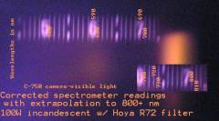 Annotated incandescent IR spectrum seen by C-750. Hoya R72 filter, using 100W Philips incandescent bulb as light source. Same as above picture, with scale extrapolated to show just how far off the scale it is. Looks like a range of 725-815 nm, where the latter number is apparently the physical limit of this spectrometer. |
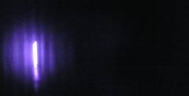 Despite repeated attempts I was not able to get any spectrum photograph with the 850 nm filter, which would not be surprising as the spectrometer only goes up to about 815 nm. The spectroscope’s slit is visible, and the scale is not visible. |
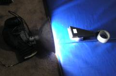 This is the setup I used to photograph the preceding infrared spectrum shots. It was necessary to keep the camera steady not only for sharp infrared photos, but so I could focus once (easier with the filter off), save it and use it for all the photos. Incandescent white balance obviously used. Camera was on top of rightmost roll of tape on which Hoya R72 filter is resting. Note color distortion due to very bright light near the bulb. The mat is dark blue, not light blue. |
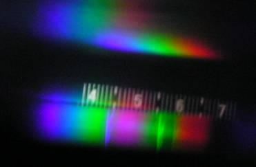
Unretouched spectrograph taken with Olympus C-750 of brand-new Zoo Med Reptisun 5.0 UVB fluorescent (F15T8/REPT, 18"), Nov. 12, 2008.
Using ISO 100, F2.8 1/1.6 sec exposure (compared to 0.5 seconds for the LED and sunglasses tests below using UV and IR), automatic white balance. This is the first time it ever definitively showed anything well into the UV-A band, much less the UV-B band. This also differs from the other spectrographs taken with this camera in that the visual appearance to the eye of the same spectrum is very different, compared to what the camera sees (though somewhat comparable to the camera seeing in so-called false colors well into the invisible portion of the infrared spectrum). It is also unique to the eye among all the other fluorescent spectra in that with the naked eye, I can see the 404 nm almost-UV mercury line clearly even at 12 inches, whereas ordinary fluorescents filter it to the extent that I find it only visible at 1 inch or less. By eye, the spectrum is only visible from 404 to about 710 nm. It is dim in the violet until the bright blue line at 436, followed by a darker area of blue which could indicate filtering or just less emission in this range. There’s a lighter blue from about 470-500, and a green area to about 560, which includes a bright green band from 550-560 which would include the 556 nm mercury line (which seems to be obscured on other fluorescents). It is greenish yellow up to the yellow-orange band at about 595-605, then orange, then turns red around 640, and dims around 710 nm. That is the visual appearance. I did not notice any green or blue haze from my own lens fluorescing, but neither did I notice that when I saw other people’s lenses fluorescing under a blacklight, or when doing the UV LED test at the beginning of this page.Annotated Spectrum UV-B to IR 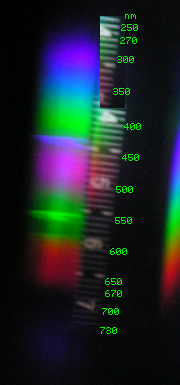 | |
Extended Visible Spectrum 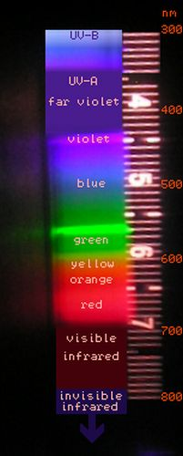 |
The color band from 500 down to 450 appears magenta;
the 436 nm line is violet as it should be; from 420 to 390 nm it appears
bright green. Perhaps this is due to these wavelengths causing internal
lens elements of the camera, or their cement, to fluoresce (which has been
noted as one of the “difficulties” of ultraviolet photography
-- and perhaps a similar mechanism could allow some animals to also see
lower UV wavelengths indirectly via the fluorescence they generate in some
part of the outer eye). I would assume that it must be fluorescence,
because the spectrum is visible well below the point at which the glass of
the camera would block the light. Also, the green fluorescence in the
upper UV-A range is consistent with the frequent observance of this in
other contexts; the following diverse things also fluoresce green from
longwave UV-A light: the human eye lens, some CRT phosphors, scorpions,
tinea, urine, Lysol. Continuing down the spectrum, the shorter-wave UV-A
wavelengths appear blue, and then the UV-B appears violet, with a bright
area around 300 nm but petering out around 285-290 nm. I assume that this
phenomenon has so far not been visible under solar illumination because
the visible solar spectrum overwhelms these invisible wavelengths, whereas
this Reptisun bulb is much brighter in the ultraviolet than in the visible
range. The Oct. 15, 2008
solar spectrum pictured above was taken at ISO 100, F3.2 1/15 second
exposure, so extreme wavelengths are not likely to be visible; however,
looking at that photo again I do note a purplish glow in the high 300’s,
bluish further down, with a tinge of purple at the end. I dismissed that
at the time as reflection or otherwise extraneous. While it is possibly a
faint fluorescence from solar UV-B and UV-A, I still consider it probably
extraneous; perhaps with a suitable filter it would be possible to obtain
a more definitive solar UV spectrum. Revisiting the camera’s view of an incandescent
spectrum, while the obvious violet band ends at 430 nm, filter tests
show that it emits some light down to 390 nm. The “extraneous” greenish
glow in the photo from 390-430 nm could also be a weak fluorescence, since
it appears that those wavelengths do induce green fluorescence from the
Reptisun tests.
Compare with the spectra pictured in
Jukka Lindgren’s comprehensive study of reptile lamps.
(Downloadable PDF version here.) The
spectra of various
reptile lamps and the Finnish midsummer sun are shown in detail, with a
Reptisun 5.0 here, used 10 months (thus somewhat less output than a new
lamp).
|
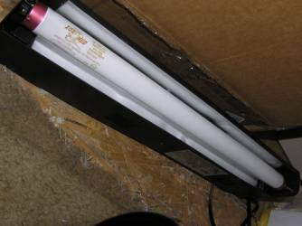 The new bulb being tested. Click to zoom in. |
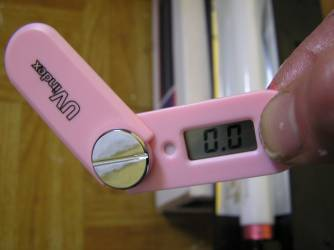 UV Index 0.0 with lamp off (sunny room with two windows, wall painted yellow). |
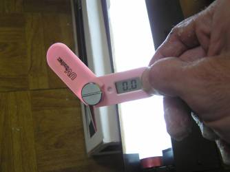 UV Index still zero with sensor facing away from lit bulb, about 2.5" away. |
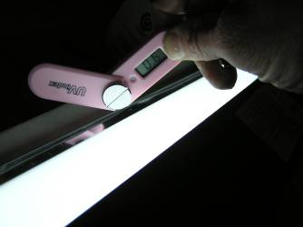 UV Index 0.6 with sensor facing halfway between previous position and the lamp. |
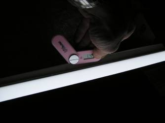 UV Index 1.4 at 1 inch, facing the bulb. The above spectrum was taken just after this test. |
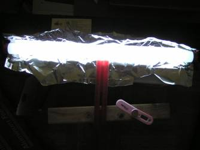 Setup to measure maximum UV index from this bulb. Aluminum foil (Waldbaum’s America’s Choice Standard) inserted with shiny side facing bulb. Much more effective than the silver-colored (Mylar?) reflector that came with this fixture (a blacklight-blue fixture made by Sunbe Electric in Ningbo, P. R. China). |
Summary of raw data:
UV Index Distance Without aluminum foil in place (just fixture’s original reflector): 0.0 ~3 feet, lamp off, facing up, away from lamp as a control 0.0 ~2.5", lamp on, facing away from bulb 0.6 ~2.5", sensor about midpoint between facing away and towards bulb 0.9 pointing a little more directly at bulb 1.4 ~1" pointing at bulb With aluminum foil in place: 3.4 ~4.5 mm (distance from edge of unit to sensor) 2.8 1/4" 2.1 1/2" 1.8 1" 1.3 2" 1.0 3" 0.8 4" 0.6 5" 0.5 6"
Notes, and a caveat, regarding the UV Index measurements
The UV Indices are significantly higher with the foil in place, as expected. While the data seems on the low side compared with others’ tests of this bulb, the decay rate with distance follows a very similar slope. The meter used is a cheap model from Hong Kong, a Model 691 described as a “Digital UV Index Exposure Meter Tester Monitor for Outdoor Sunlight” (quite a mouthful). Thus it is likely not as accurate as more expensive meters. It seemed to give accurate readings outdoors when first received and tested in Fall 2008 (consistent with the NOAA/EPA UV Index forecast for that day near solar noon, and declining as expected on each side of solar noon). Summer readings are a little lower than the NOAA/EPA and other UVI forecasts. Indoors it gives zero readings (as expected), even in sunny rooms (with the windows closed). If placed right up against the window glass, a small UV Index may be indicated, perhaps too much. Example:
November 10, 2008
Time UVI Location
Sun partially obscured by clouds:
12:08 0.2-0.3 next to window in view of sun
12:08 0.4 just behind storm window of front door
12:08 0.8 just in front of storm window (outdoors)
Full sun:
13:06 1.0 behind screen & storm window of front door
13:06 1.7 behind glass only of storm window of front door
13:06 3.5 direct sun outside in front of door (reflecting off concrete)
Near the summer solstice, 2009:
Model 691 UV Index Normal: ~90 degrees to sun's rays;
Global: pointing straight up
Date Time Normal Global Comments
31-May-2009 02:01 PM 6.7 5.4 shed (highest recorded on Staten Island)
07-Jun-2009 01:42 PM 5.3 4.4 porch
29-Jun-2009 12:29 PM 5.2 porch (NOAA/EPA forecast = UVI 9)
29-Jun-2009 12:30 PM 6.1 5.9 shed
29-Jun-2009 03:05 PM 5.9 4.1 porch
29-Jun-2009 03:08 PM 6.3 4.6 porch
03-Aug-2009 12:13 PM 7.5 6.4 Hillside Campground, Gibson, PA
03-Aug-2009 01:02 PM 7.0 5.0 Hillside "
03-Aug-2009 01:54 PM 7.1 6.1 Hillside "
------------
Staten Island Maximum: 6.7 5.9
Pennsylvania Maximum: 7.5 6.4
The Gibson, PA forecast UVI is 11 when 9 in New York City; though it is
significantly to the north (between Scranton, PA and Binghamton, NY), it
is a rural area in the mountains (elevation about 1350 feet at this
location), which would increase the UV Index, whereas the Staten Island
location is elevation 50 feet, in an urban area though near the bay. If
these maxima are used, along with the forecasts, to make a linear correc-
tion factor for the UVI meter, then the typical early November readings of
2.0 would actually be 1.0 higher, e.g. if 9/6 were used, which is close to
what 11/7.5 would result in (2.9). In both cases, the numerators of the
would-be correction factors are the forecast UVI and the denominators the
maximum UVI measured at the given location.
I suspect that the readings behind glass are a little high; the Reptisun
readings are a little low, and the outdoor solar readings are reasonably
accurate. The UV Guide UK has found that a window screen will reduce UV-B
by about half, and that glass will block all but a negligible amount of
UV-B. However, enough UV-B appears to have penetrated far enough into my
camera to obtain the above Reptisun spectrum, without even using a very
long exposure time (1/1.6 seconds at ISO 100, vs. 16-32 seconds at ISO 400
for some other UV and IR shots). Presumably the accuracy of this meter is
greatest when the spectrum is similar to that of the sun; the Reptisun 5.0
resembles the sun (at much lower intensity) in its UV-B and lower UV-A
spectral mix, but drops off after 340 nm so that its upper UV-A, visible
and IR emission is relatively dim. Whereas those UV-A wavelengths in the
upper 300’s pass with increasing ease through glass. These
wavelengths are also included in the Diffey erythemal action spectrum, but
at a low and decreasing weight. A slight overemphasis on these
wavelengths could explain both the higher readings behind glass and the
lower readings from the Reptisun.
Last spring and summer I tried a different UV Index meter, called the
Solarmate and apparently manufactured by a company in Ningbo, P. R. China
(just like the blacklight fixture used in these tests). I did not post
any of the results because it was highly inaccurate, despite being more
expensive than the Model 691. The Solarmate would light up LED’s to
indicate the supposed UV Index. One LED would always light to indicate
the device is working, even in total darkness. This obviously made it
impossible to discriminate between zero and low-level UV-B, e.g. a UV
Index of 1. Spring equinox and later spring readings were plausible, but
when summer came around the readings were still in the same ballpark.
If placed just behind window glass it could indicate a UV Index of 5, and
a lower value towards the center of the room in sunlight (vs. the Model
691 which gives a zero reading away from the window). I considered the
device to be useless, however, after placing it right up against an
incandescent bulb -- it recorded something like a 3 UVI. While
incandescents do emit a tiny amount of UV-A at that distance, it is not
only negligible in quantity, but also in wavelength energy -- it is
longwave UV-A which has a small weighting on the Diffey erythemal scale
but at these levels could not cause tanning, burning, or vitamin D synthesis.
Placing the 375 nm UV LED right up against it resulted in a reading of
“1”, which could either mean zero or a small UV Index, as
noted; the Model 691 records 0.0 from this LED as it should. The Model
691 also records a UV Index of 0.0 next to all incandescent bulbs, as well
as the ordinary fluorescents tested on this page by GE and Philips. This
includes the GE Plant & Aquarium light which is documented to emit non-negligible UV-A around 365
nm -- not significant for erythema, but likely higher than the
negligible emission of an incandescent -- this too registered 0.0 on the
Model 691.
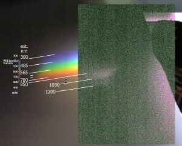
Spectral response of Olympus C-750.
Wavelengths are approximate. Sunlight shining through freshwater fish tank,
which probably accounts for the dark (absorption) band around 1100 nm.
Infrared image uses filter with a cutoff of 850 nm (sharpened to improve
contrast; not so grainy in original), superimposed on visible-light image
(no filter). Wikipedia values (from article
“color”) are
supplied for reference but are not aligned with the photo’s colors.
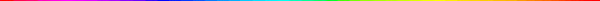
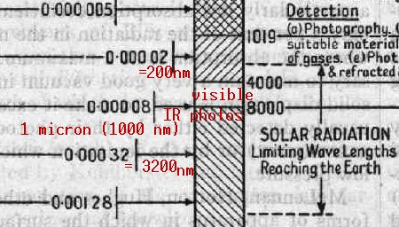
Diagram from 1929 Encyclopaedia Brittanica (vol. 18, p. 877),
showing the entire known elecromagnetic spectrum at that time. Usually
nowadays, 700 nm (7000 angstroms), or the low 700’s are taken to be the
visible-invisible IR boundary; has human vision gotten worse since the
1920’s? Actually, 800 nm light is said to be barely visible if very
bright (much like barely visible UV-A light). In the above experiments, I was
able to see light up to about 790 nm if other light was removed, but
otherwise only up to 690-700 nm when accompanied by a bright full spectrum.
LED’s emitting in the 800’s are said to be seen as
dim destaurated red, which
is how isolated light in the high 700#8217;s does appear to me in the
spectroscope, while LED’s emitting in the 900’s are totally
invisible to the human eye, even when very bright at close range, without a
trace of light seen (e.g. those 920 nm LED’s tested below). Whereas a
375 nm UV-A LED’s beam is visible at close range, but it is otherwise
invisible (despite it also emitting a small quantity of visible light); the
fluorescence it causes suggests that it is much brighter than it
seems.
Ultraviolet seems to be just as visible (and invisible) to the C-750 as to
the human eye (As of Nov. 12, 2008, the Reptisun test constitutes an
exception, but even there, that must be fluorescence, not the actual UV-B and
lower-wavelength UV-A, which is visible to the camera). The lens glass and
cement both are said to strongly attenuate UV in the camera; the human lens effectively blocks
UV-A by absorbing and converting it to green light. A 375 nm UV-A LED is
only visible at close range.
The UV blocking is performed mostly by the eye’s lens, which absorbs
the UV and fluoresces very noticeably under a blacklight. Some people who
have had cataract surgery, such as Dr. W. S. Stark, a professor at St. Louis
University, are able to see the entire UV-A range and even a
trace of UV-B down to about 300 nm, if their lens is not replaced, or is
replaced with a UV-transmitting lens, as was common in the 1980’s and
before. As the wavelength of light decreases in the visible range, we see
blue then violet; barely-visible UV-A may appear lilac, but a
“blacklight blue” lamp will appear dim violet from its 404 nm
mercury line, with the lower UV wavelengths invisible. However, a person
without a UV-absorbing lens will see that “invisible” UV as light
blue since the retina responds to wavelengths down to about 300 nm. But
unlike other wavelengths of monochromatic light, visible UV “doubles
back” in appearance so that, for example, 360 nm and 450 nm look
similar, whereas “visible” monochromatic light’s appearance
has a unique correspondence to its wavelength (see chromaticity diagram
below).
For my phakic eye (lenses both present), the range of visible light appears to
be 375-790 nm and perhaps a bit lower in my right eye (365 nm). The two
extremes are certainly in the UV-A and IR range normally considered invisible,
but it is only invisible when bright light of more ordinary wavelengths
overwhelms the eye’s low sensitivity to these wavelengths. Even the
almost-UV 404-nm mercury line of fluorescent bulbs appears quite dim and is
easily obscured. Of course the UV-visible boundary at 400 nm is just a
convenient approximation, and there is almost no difference between this
light and, say, 396 nm light.
I would also consider the visible infrared to be a distinct color from red
as it has a distinctive appearance, a deep, dull cherry red. The camera
will show a similar color in the low 700’s, becoming orange and then
purple in the range which is actually (rather than just conventionally)
invisible to the human eye. The ultraviolet I can see also looks somewhat
distinctive, but I can’t see deep enough into the UV-A to notice the
color shift to light blue noted by Dr. Stark. The friends I’ve
shown the UV LED to all perceived it in a similar way, with a similar
color and (lack of) visible brightness, except for one friend from Rhode
Island who kept insisting it was not violet at all, it was blue! So I
asked him if he had had a lens removed, and he said yes. He was seeing
the wavelengths which were invisible to me as blue, as in the chromaticity
diagram below. His eye appeared normal under visible light but there was
no fluorescence at all under 375 nm illumination.
Many animals (e.g., birds, fish, insects and reptiles) are able to see easily
down to about 350 nm also (in some cases having an extra color receptor in the
eye for UV), and provision of UV-A and in some cases UV-B is a necessary
requirement for raising them in captivity. Fish appear to utilize UV for
known and unknown purposes, and there are plenty of “actinic”
aquarium bulbs on the market that provide it, though in lower quantities than
reptile bulbs. Fish seem to use UV-A to improve the contrast of underwater
images, and my neon tetras got
a tan in the summer (July 2008) when their open tank was exposed to
sunlight; in humans this is caused by UV-B causing melanocytes to generate
melanin pigment, and UV-A oxidizing it to make it dark.
A comprehensive discussion of ultraviolet and reptiles, as well as bulbs made
for them, can be found at UV Guide UK. While it is not clear if
reptiles see UV-B, many reptiles certainly sense it and adjust their exposure
based on their blood level of vitamin D.
Humans also generate most of their vitamin D through UV-B light, and the
popularity of sunbathing in northern countries like Denmark could be a
similar instinctual replenishing of low vitamin D stores due to the low
amount of D-generating UV-B there. The physiology of vitamin D synthesis
in various species, including humans, is essentially the same. Similarly,
excessive sun avoidance and overzealous sunscreen use has been associated
with quite a few deficiency
diseases. Osteoporosis of course, possibly Seasonal Affective
Disorder, but also various autoimmune disorders and cancers, including
that of the skin (interestingly), as well as colon, breast and prostate.
It would seem that moderation rather than outright sun avoidance is key
here. For instance, both overexposure and underexposure to UV have been
associated with immune-system suppression. Overexposure to UV-A or UV-B
causes damage, but inadequate exposure appears riskier than moderate,
sensible exposure. Boston University’s Dr. Michael Holick is a
fairly well-known advocate of moderate sun exposure who says that one can
safely obtain adequate vitamin D from short, regular exposures to the sun
without sunscreen, sometimes as little as 5-15 minutes for the most
fair-skinned people around noon in summer -- which infuriated his
colleagues who preached total sun avoidance. An interesting interview
touching on the human and reptile implications of this, particularly for
the elderly, can be found on Melissa Kaplan’s site.
Many studies showing very negative effects of UV-B in particular use FS-phosphor
lamps generating high levels of damaging non-solar wavelengths; the
problem is that the UV-B is of an unnaturally-low wavelength, not the UV-B
per se. The FS stands for Fluorescent Sunlamp, as they used to be used in
tanning beds (which now use much-safer bulbs emitting mostly UV-A, but
still at a high intensity that results in an unearthly UV Index of about
30). Dermatologists still use such broadband bulbs for human psoriasis
treatment (while decrying the supposed evils of sunlight, which is safer
and cheaper), but a narrowband UV-B bulb is thankfully reducing the
FS-type bulb’s popularity as it maximizes the therapeutic value
(which could be due to massive vitamin D synthesis in the illuminated
skin) while minimizing side effects from other wavelengths. I found lots
of links to such studies by Googling UV-B mW cm -- the rationale
being that proper doses of UV-B are generally in the range of microwatts (uW),
not milliwatts (mW), per square centimeter; milliwatt doses can be quite
harmful, but are frequently used in these studies, which not surprisingly
find that this causes damage. See for example this
study by Poulsen, et al. using a mere 40-watt FS bulb. Also notable
though is that the simultaneous administration of UV-A with the UV-B
in that study reduces the damage, even with the excessive irradiation at
45 milliwatts per sq cm with the unnaturally low UV-B components that this
lamp provides. UV-B is not found in isolation in nature; it is always
accompanied by larger amounts of UV-A. And the dangerous UV-C wavelengths
are blocked by the ozone layer, but some UV-B lamps emit traces of UV-C,
which should be considered in studies that attempt to isolate the effect
of natural UV-A or UV-B.
This
editorial, “Photobiology 102” by Gasparro and Brown in the
Journal of Investigative Dermatology decries such vague, misleading
and poorly-described studies as, among other things, “at a minimum
inaccurate and probably just plain wrong”. Its Figure 1 also clearly
shows the low-wavelength problem with FS-type “sunlamps” and
their very un-solar spectrum (dangerously close to the UV-C range)
-- note the huge area between the leftmost two curves as well as the slope
and minimum value of the leftmost curve. As the paper’s title
suggests, it is not surprising that some very basic and fundamental errors
can be made in such studies’ conclusions. I found it amusing when
the author needed to remind his colleagues of the very basic
“Suggestions for potential JID submissions” which might be
called “Photobiology 101” -- for example, suggestion 3
involves principles that are obvious even with the crude do-it-yourself
equipment and procedures used in my experiments on this page, and
well-known also to conscientious reptile keepers. For example, well
before reading any of this, I found that ordinary plastic significantly
blocks UV-A, as shown in the Lysol fluorescence tests below. The JID
editorial reminds readers that plastic will strongly attenuate UV-B and
“may also have an effect in the UV-A range.” I would not
hedge it with “may”, as most plastics will apparently
attenuate UV-A as well, and even those designed to transmit UV, such as
tanning-bed acrylics, will also attenuate UV if not properly maintained.
I think that such practices have contributed to the excessive, doctrinaire
conclusions that have often been made public policy, such as
recommendations to use sunscreen and large hats even under low wintertime
UV indices when the greater and more widespread danger is vitamin D
deficiency from inadequate UV-B exposure (not to mention that some
sunscreens produce free radicals themselves -- the safest ones are zinc-
or titanium-oxide-based as they simply reflect the UV, and much of the
visible spectrum as well, thus their white color). Extreme UV avoidance
might make sense for someone with unusual photosensitivity, but is
increasingly harmful as one moves up the Fitzgerald skin type
scale.
Views such as “There is no such thing as a safe tan” beg the
question of why humans and others have a method of producing a natural
sunscreen for free, while synthesizing an essential vitamin/hormone at the
same time. Even those who do not tan well can make vitamin D without
burning, particularly when the UVB/UVA ratio is highest near midday, the
time when many claim we should stay out of the sun. Tanned skin is said
to have an SPF of 9, though like most of such data, it probably only
applies to fairer Caucasians. With my skin type IV, I don’t need an
SPF stronger than 4-8, and then only in the spring when untanned. While
fairer skin types would of course need more protection (and darker ones
less), I think that the problem with using high-SPF sunscreen at all times
and preventing tanning is that the skin is very vulnerable should the
sunscreen wash off or be omitted even for a short time, aside from the
vitamin D deficiency creating a risk of some of the very conditions one
wishes to avoid. A greater problem occurs when both newborn babies and
their mothers totally avoid the sun; both baby and breast milk become
vitamin-D deficient. Similar practices in Victorian times led to
widespread rickets until the need for UV and vitamin D was discovered;
before antibiotics were discovered, tuberculosis patients were treated in
sanatoria with plenty of fresh air and sunshine, and sometimes with
UV-emitting mercury-vapor lamps. Rickets, osteoporosis and osteomalacia
may be on the increase today owing to the combination of sun avoidance and
an indoor lifestyle, with most of the time spent behind UV-blocking glass,
as in a car, building or other indoor environment. Yet many still
“seek the sun” as the reptiles instinctively do.
Speaking of seeking the sun, that is exactly what I’ve enjoyed doing
for years, as noted, never using more than SPF 4 or later SPF 8 sunscreen
except occasionally when trying a sample of something higher. In the
1980’s that was not considered unusual, and the “avoid the sun
at all costs” mentality was not yet something most people gave any
thought to. True, my high-school chemistry teacher was the first person I
ever heard say “there is no such thing as a safe tan” -- he
had very fair skin so maybe that message resonated with him, but the rest
of us just used common sense in the sun, and one thing I distinctly recall
from back then is that the “experts” said that SPF 15 is
virtually total blockage so that anything higher is a waste of money.
One would commonly say “suntan lotion” and “bathing
suit” rather than today’s “sunscreen” and
“bathing trunks” which also probably reflect greater fear
of skin exposure to the sun nowadays -- recalling the Providence
Journal’s article (“America’s Dangerous Heliophobia” by
Michael Holick) that notes, inter alia, that swim trunks today
“cover more skin than a nun’s habit” -- though it is
primarily a problem for males in the U.S., there are plenty of societies where
cultural conventions mean it is difficult or impossible for women to get a
significant amount of sun, even at the beach. It is common today to see
children and adults of both sexes at the beach swimming with not only
essentially long pants, but a shirt with generous sleeves. Not long ago
this would be considered strange. Hopefully common sense will return in
these areas.
Even in plant-related sites once sees the effect of heliophobic
assumptions. Many a website confidently states that plants do not need
UVA, and UVB is harmful to them, without proving those assertions --
perhaps the next step is the marketing of sunscreen for our garden plants
as the next “essential” product that we seemed to do just fine
without? Of course other sites are more reasonable and note that plants naturally
spend all day in the sun; some need higher and some lower intensities, but
all will die if we subject them to zero sun exposure. And that certain
plants have a specific need for UVB, such as basil, which is said to need
UVB to properly make the oil which gives it its charateristic wonderful
smell. Indeed, basil grown indoors does smell and taste bland compared to
the basil I put outside next to the UV-reflecting concrete.
Most years I would go to Boston in April, and it being just after the end
of winter I would have no base tan -- the first time I did this in 1981 I
recall a lot of sunburns on my friends around the middle of day 2, and I
got a little burnt then too I think, so used SPF 4 on later trips and in
the summertime and had no problem. I quickly learned to never use
sunscreen on the forehead at all, since sweat will push it into the eyes
and cause pain. Building up a base tan gradually from about April, by the
time July comes I can be outside all day while cycling without sunscreen
and not get burned. The same was the case traveling in southern Europe in
July and August. Sometime perhaps later in the 1990’s I switched to
SPF 8 just because SPF 4 was harder to obtain. Occasionally I would do
without sunscreen in August when the tan was near its seasonal maximum and
I observed that there was a point at which I would not burn. Since early 2008
I decided to forego sunscreen entirely, which was possible in 2008-9
because I built up gradually starting with short exposures in the
springtime and throughout the season shooting for lunchtime sun. Since
the start of 2008 I only used sunscreen once, during an all-day bike trip
when I wasn”t sure if I had an adequate tan yet (it was adequate, so
I didn’t use sunscreen on the ride back, which was even sunnier).
This was largely due to reading about the importance of vitamin D
production and the detrimental effect of blocking UVB while letting UVA
through. Even the sunscreens advertised as blocking UVA let a significant
amount through if they do not appear transparent on the skin, as all
sunscreens generally do (except for the thick coating of zinc oxide e.g.
on the nose of many skiers, that comes in handy in such a high-albedo
environment) -- this is because the upper part of the UVA range is
actually visible, so that it would not be transparent if it blocked all
UVA. The sunglasses tested on this page do block UVA, and they are of
course not transparent. Even the UVA absorbed by the sunscreen is likely
to react with the sunscreen, perhaps even causing fluorescence like so
many ordinary objects exposed to UVA. Are those wavelengths emitted from
within the skin benign, or as some report, are they generating free
radicals? Thus it seems to me that for my skin type, it is better to go
without sunscreen. As far as sun damage, I think that the DNA
dimerization is analogous to the microtears in muscle after a workout.
Technically damage, but necessary, and the body heals and gets stronger as
long as the sun or exercise is not excessive. DNA that form dimers are
normally easily repaired, since each nucleotide can only be combined with
the corresponding nucleotide, and the repair mechanism knows this -- as
with a computer error correction code. Meanwhile the vitamin D generated
seems to have potent anti-cancer properties.
Skin cancer? Thankfully I have not experienced that, though several
40-something fair-skinned friends, including one of Central American
descent, seem to have a problem with that, getting examined 1-2 times a
year, at which time the dermatologist often will find a small basal cell
cancer which is uneventfully removed. One has had so many of them removed
by now that it has become thoroughly routine (He came over one day and
cheerfully announced, “Hey, do you wanna see my cancer? I’m
having it taken out tomorrow!” -- he was not at all worried about
the cancer itself, just the scarring from the surgery).
They stay out of the sun, while I and my whole family routinely went to
the beach often throughout my childhood and later, and no one got skin
cancer -- is there more going on here than just skin type? I wonder if
they could cut down or eliminate those cancers by getting more D -- if
their skin can’t tolerate much sun, then perhaps a few thousand IU
per day. One friend did just that last September (2008) just before
having a basal cell carcinoma removed; so far no remission to my
knowledge, though it's only about a year so far. And perhaps there are
other things we do not understand well, which if we did know,
could effectively prevent or cure all this cancer.
In 1991 I did have a mole removed from my chest that I had since at least
age 3 if not birth, because it had changed shape and I understood that to
be a risk factor. The dermatologist said it was not cancerous but the
cells were slightly abnormal so it could potentially lead to problems in
the future. It was not cut out by the roots as with what my friends are
currently dealing with; it was shaved off under local anesthesia with a
device that looked just like a disposable razor for facial shaving -- she
just took off layers until it was a bloody mess, then bandaged it and
after it healed, recommended sunscreen for I think 6 months. I did once
inadvertently burn it so I made sure to protect it at first, but after a
few months the site was barely visible, and from the following season to
now (writing in August of 2009) it has remained so, hair follicles, color
and sun tolerance is the same as the surrounding skin. So thankfully that
went well. That dermatologist did a great job and I would recommend her
to anyone, though I think she has since retired.
A doctor friend of mine also worked in a dermatology practice and could
not fail to take notice of all the disfiguring cancers he encountered.
He doesn't get much sun either. He is visually 1-2 skin types darker than
me but sounded concerned when I told him about going without sunscreen
recently. Though he said there is certainly plenty of proof that
excessive sun exposure causes obvious damage to the skin and
increases the cancer risk, the boundary between excessive and moderate of
course cannot easily be defined. What I do know is I haven’t ever
gotten cancer but I did break a bone once, in 1997 (wrestling an opponent
of about 145 lb, whereas I was and am 124 lb.), and not surprisingly that was
in early spring before getting any significant UVB-bearing sun for that
year. It healed in 4 weeks however, which is faster than anyone else I
spoke with, and the reason would have to be that I started drinking a
gallon of milk every 1-2 days (1600 IU vitamin D if accurately fortified),
with lots of meat protein and keeping as active as possible (mostly
walking at first). Since then that rib has been subject to far stronger
stresses (opponents twice my weight wrestling much harder than at that
1997 practice) and has withstood it just fine.
Attempting to merge such real-life data with studies as well as
dermatological hearsay, first of all, from my Greek-Italian background and
the definition of the skin types, I estimate my Fitzgerald skin type is 4
(vs. the type 2 skin assumed in much of the literature, which must be
particularly annoying to those with the much darker African and South
Asian skin types). Actually it behaves like a type 5 in terms of
tolerance to sun exposure, but my skin is not that dark; some
acquaintances who should be a type 5 or 6 report that they need to be far
more careful in the sun to avoid burning and even blistering after a
relatively short exposure (I’ve never blistered from the sun), so I
suppose skin type could be a more complex parameter than just a few
cut-and-dry well-defined skin types.
The formula used by Solarmeter would agree with the recommendation by Dr.
Holick for 10-15 minutes of summer sun on type 2, fair, untanned skin with
no sunscreen (if 1000 IU every few days was adequate, which it may not be,
though it's better than nothing):
UV Index 10 = Solarmeter reading 71 IU/minute (~UVI*7), 10% body area for
untanned skin type 2, no SPF, age 20. 1 MED = 14 minutes under these
circumstances, and 1000 IU per 20% of body area exposed. For my skin type
4, 1 MED would be 28 minutes. Higher age is theorized to lower the
vitamin D production but no word on whether it also adjusts the time to 1
MED. I am quite skeptical of unproven assumptions about what is
supposedly inevitable as one reaches certain ages: the supposed decline of
maximal heart rate with age has always been a running joke to my father
and I; he would joke about barely breaking a sweat when jogging at over
the alleged 100% of maximum heart rate. Particularly after age 70, when
the wildly inaccurate 220-age formula is even more inaccurate for a
healthy, active individual, while I have sustained heart rates over 190
[measured maximum, 204] without feeling I was at my limit). Now at age
44, the treadmill at the gym refuses to let me go above the quite moderate
level of 174 beats/min unless I tell it I am 17 years old. ;-)
With regard to vitamin D and sun exposure, there are also plenty of
assumed variables. Older people are often assumed to be indoors more and
less active, less protective base tan, less direct sun exposure, greater
coverage of clothes, higher weight, poorer circulation. None of these are
invariably the case of course, and the explanation for the drop in vitamin
D production with age certainly needs to be more precise -- is it due to
thinner skin, less 7-DHC, or poorer circulation to remove the pre-D before
it gets broken down? I do know some people who have lost hair on limbs,
perhaps due to poor circulation; have these kind of specific variables
been investigated?
Not to mention (male) clothing and increasingly conservative attitudes about it
-- I know a 40-something who says regarding certain clothing that appears
just fine to me, “I’m too old to wear that” -- and while
I can still fit into shorts and bathing suits I wore in the 1980’s that
were considered perfectly ordinary then, they are of limited use nowadays
because of said changing attitudes, so that now for some strange reason,
only runners and Olympic swimmers don’t habitually wear shorts that
cover their knees; while many “shorts” today even cover most
of the calf. At the beach, the percent of body exposed would typically be
50-60% vs. 80-90% in the 1980s, plus the sunscreens in common use are
double-digit today vs. single-digits in the 1980’s.
So just what would the effect of age be on time for 1 MED and also on
vitamin D production, when isolated from other factors? I have only seen
blanket statements about a 75% drop in D production by age 70, with a big
drop sometimes seen after age 40. 70-year-old skin indeed looks different
from 20 or 40-year-old skin, and maybe something can be quantified here
more precisely. This has been explained as due to thinner skin having
less 7-DHC. But how much does skin thin with age, and has this thickness
been measured? Sun exposure is said to thicken the skin, so would this
cancel out the hypothesized thinning? (If there are any studies done on
this, hopefully the researchers will stay away from those low-wavelength
FS lamps, and use either the sun or a lamp of suitable intensity and UV
Index -- not some UVI 30 tanning lamp either).
In my experience, having measured 7 skinfolds for bodyfat measurements
regularly since my 20’s, they tend to not go significantly up or
down, except for a drop of about 0.5% after a long bike trip of 300 miles
or more. Others can drop or gain weight easily, but for me I tend to
remain within a few pounds of my normal weight no matter what. The
metabolic drops and other “inevitable” milestones of aging,
alleged to occur at age 25, 30, 35 and 40, have not occurred yet to my
knowledge. There are also plenty of active, healthy individuals in their
60’s or later; it is not an isolated phenomenon but I think it has
more to do with attitudes on aging and associated behaviors than with
reality. Aging of course is real, but not all the assumptions about it
are.
Dr. Kenneth Cooper said basically the same thing back in the 1960’s
when people were “getting old” by age 30 or 40 because of
inactivity, and this only got worse when they started “acting their
age”. The gist of his books were that aerobic exercise pushes
additional oxygen through the body, and it is this extra oxygen which is
responsible for the health benefits of exercise (including supervised
rehabilitation of cardiac patients -- some of whom later ran marathons in
their 60’s), and the lack of it is responsible for a similar
plethora of avoidable degenerative changes -- particular when cardiac
patients are advised to “take it easy” when that is only a
sure route to debility. (and with all the gyms that have popped up since
then, it seems people need to get outside and exercise even more today
with our rising rates of metabolic syndrome, diabetes, and related
conditions that are even turning up in children at record rates.
A lot of the benefits of aerobic exercise sound like the kind of thing one
encounters in studies of vitamin D-deficient patients who are put on
adequate doses of it via diet or sunshine. There is certainly overlap, as
most of the exercises advocated by Dr. Cooper for maximal benefit tend to
be outdoors -- and not a word about sunscreen -- it was the 1960’s
after all. The doctor practiced what he preached and is still around,
still healthy, still running regularly in his 70’s.
Critics might say it looks like some panacea, but it is no more so than
the amazing recoveries seen in scurvy patients after the cause of that
disease was discovered. Unlike vitamin C, which we seem to get enough of
much easier than with D, we can store vitamin D but often do not because
our intake is so low. Dr. Cooper devised a point system to quantify, in
easy-to-remember values, just how much exercise is enough, based on oxygen
consumption. For vitamin D we already have units to count how much we are
getting, but the problem is that it is often hard to get enough. I get a
lot of sun sometimes and other times not as much (typically zero in the
winter without a rare winter vacation to someplace like Florida), and my
multivitamin has never had more than 400 IU of D, so with my skin type and
ease of tanning I might not be getting as much D as some of the literature
suggests (yes, I should probably get a vitamin D test to quantify it better).
Since the successful healing of that rib in 1997 I have drunk more milk,
but certainly have not averaged more than a few 100 IU per day from that
source in recent years.
So with that in mind I cobbled together a MED table for maximum burn-free sun
exposure and vitamin D production, using that 28-minutes-to-erythema figure, twice the type-2 value:
Fitzgerald Skin Type 4
MED's with tan or sunscreen = 1000 IU per 20% of body exposed; SPF 1 = no tan
and extrapolating in a linear fashion:
SPF 1 SPF 2 SPF 4 SPF 8 SPF 16 SPF 32
0:28 0:56 1:52 3:44 7:28 14:56 \
(UV Index 10)
Head & Hands (10%): 500 IU /
Sleeveless (20%): 1000 IU (largest exposure for casual everyday exposure)
Shirtless (50%): 2500 IU (long pants)
Shorts only (80%): 4000 IU (half thigh, no shoes)
Nude (100%): 5000 IU (I’m not a nudist so not very likely...)
4 MED's untanned = 1:52; 4 MED's dark tan (SPF 8) = 7:28.
It is plausible but still hard to prove; I rarely burn or even
“barely turn pink” due to my skin type, but about a half hour
untanned or all day with a summer tan seems plausible; such a tan was
described as equivalent to an SPF of up to 9 by an author in the 1990s
(looking up reference), and perhaps is higher for higher skin types.
If these calculations are correct, it would be difficult for me to get the
oft-cited 20,000 IU of vitamin D in one sitting with the summer sun here
peaking at the “very high” level of 8-9 in the summertime; it
would take an absolute minimum of two hours if one timed it exactly, at a
private location and with no base tan (which would not be likely or wise
in the summertime). Furthermore the additional amount of clothes needed
in everyday circumstances would increase the time needed for 20,000 IU to
a long, impractical amount of time, during which the sun would also get weaker.
A tanning bed would probably make it easy, but I am not comfortable with
the idea of a UV index so much higher than that of the sun -- our bodies
can deal with the sun, but those unearthly UV index values must certainly
be approached with caution -- perhaps a better idea would be to make them
weaker, say with a UVI of 10 instead of 30, but then the customers would
probably get impatient as they would be unable to tan in four minutes or so,
and the facilities are unfortunately not permitted
to advertise vitamin D synthesis. So for practical outdoor everyday purposes (e.g. doing outdoor
errands in good weather) it would seem that 2000 IU per hour is a more
reasonable number, which is incidentally under the 3000-5000 IU that some
are recommending as an adequate intake.
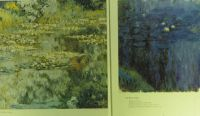
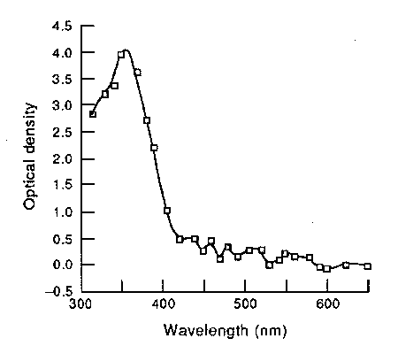
This suggests that a bright UV source, especially longer-wave UV-A or shorter-wave UV-B, could have a noticeable effect on human vision, even with the normal lens in place. It would appear as a light blue or green haze (the green would be from UV-A fluorescence of the lens, while the blue would be from direct UV visual stimulation of the retina). Aphakics report that the appearance of UV as the wavelength decreases from the usual visible boundary in the high 300’s of nanometers, is first violet, then it gets bluer (much as if the wavelength were actually increasing) and finally lightens to a light whitish blue near the UV-B range. This is because these higher-energy UV photons tend to stimulate more of the red and green-sensing cones along with the blue cones, which washes out and whitens the color, as a bright light of ordinary wavelength would do; very low wavelength UV would appear white because all the eye’s cone color receptors (red, green, and blue) are stimulated. Very short UV wavelengths, particularly the UV-C wavelengths, are truly invisible as they cannot even get past the cornea, which is fortunate as they can cause burns easily. |
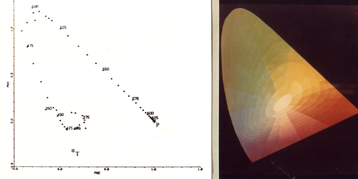
On December 10, 2007 I received a 375 nm UV LED which I had ordered. Its wavelength is “just below the visible range”. Its light is easily visible if looking directly at the LED, but shining the light on something other than a mirror or an object that is right next to the LED shows its invisibility. Is the light purple appearance of the lit LED due to a trace of higher wavelengths being emitted which are visible, or to 375 nm being visible above a certain intensity? The visible-invisible boundary appears similar to that of the eye on the C-750, and very long exposures at maximum ISO do not pick up anything other than what the eye sees. Sometimes white-balance adjustments may be needed to make the photo appear as it does to my eye; this is even necessary with some dark violet flowers (whose visible wavelength is close to the UV, and which also likely has a UV pattern visible to birds and insects).
2008 update: Tested the spectrum of this LED with right eye and spectroscope. Emits brightly from 365 to 410 nm with a little visible light beyond that. Left eye can only see the spectrum down to 375 nm, and the LED likely emits invisible light below this visible-invisible cutoff. The C-750 camera can’t see those low wavelengths at all, only showing it down to about 400 nm or so, but this can probably be improved by reducing background lighting to a minimum and increasing the shutter speed, as with IR photos.
|
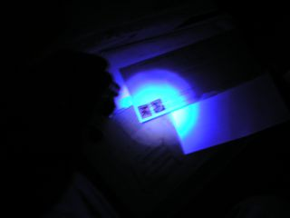 First 375 nm UV photo (in the dark) Envelopes and textbook |
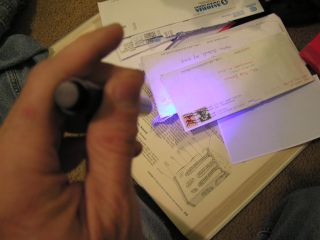 Envelopes and textbook with room light on |
With the (60 W overhead incandescent) room light on, the UV is not visibly reflected from the textbook page (which does not fluoresce noticeably, while envelopes and postal markings fluoresce brightly from the incident UV. The purple seen on the envelope, except perhaps for the very center of the beam, is visible light from fluorescence, not UV from the LED.
With the room light off, one can see a circular beam, including over the non-fluorescing textbook which reflects that pale lilac that seems to be the visible color of 375 nm light. The center of the beam is more washed out, whitish-blue, and the parts shining on the envelope would be showing a mixture of reflected UV and visible-light fluorescence.
(I’m using the term “visible light” loosely here to refer to the wavelengths normally considered visible, over about 400 nm; it does not include UV light visible to the human eye and camera.)
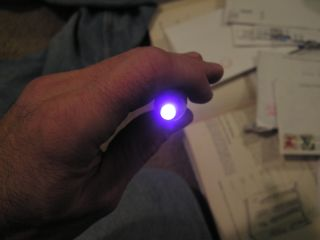 Head-on view of LED light appears purple; washed-out white from intensity at center |
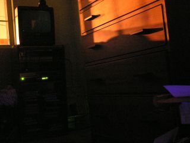 Long exposure (F2.8 16 seconds, ISO 400) shining LED from foreground in dark room towards DVD player at wall at night. Sodium-vapor streetlight across street visible from window. DVD player’s LCD visible, and fluorescence of paper in foreground visible, but no UV visible. |
The intent was to see if a long exposure would reveal light that was not
visible to my eye.
Compare an invisible infrared LED (see 920 nm tests below)
which are easily visible to the camera. A film camera without zoom
would likely be very sensitive, as ordinary film responds well to UV
(but not to IR).
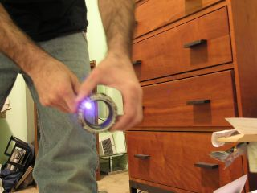 Looking in the same direction with room light on; the paper which fluoresced in the previous photo is visible in the foreground, and the paper below it is weakly fluorescing from the 375 nm LED which is being shined through my camera’s “UV filter” which does not appear to noticeably reduce longwave UV transmission (it’s likely just plain glass, useful to protect the lens only, though it may be useful in reducing haze at high altitude with a large amount of solar UVA/UVB). The unlit LED’s around the rim of the filter are the 920 nm infrared LED’s tested below. |
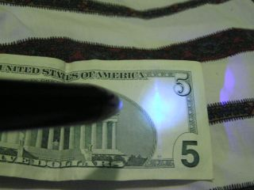 Viewing the security strip on a $5 bill on a sheet (which also fluoresces from UV). |
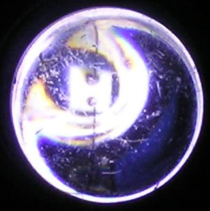 Closeup of lit 375 nm LED showing its internals, lit only by its own light. Reddish area at left may be chromatic aberration. |
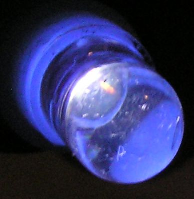 Another closeup of 375 nm LED using its own light. Bluish hue due to camera white balance; appears pale violet to eye, as shown in the previous photos. |
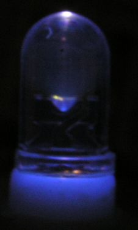 Underexposure results in truer “color”. Side view of lit 375 nm LED using its own light. |
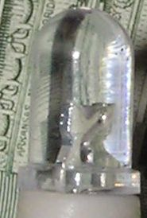 Appearance of 375 nm LED in room light, with LED off. Same $5 bill in background. |
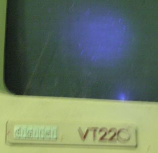 Violet: DEC VT 220 (yes, it still works!) |
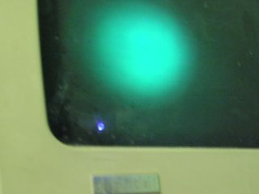 Light green: DEC Professional 350 monitor (it still works too!) Note reflection of LED’s light, to lower left of fluorescence, is the color of the LED, while the fluorescence is obviously a higher wavelength. |
|
Light blue: Toshiba TV/VCR |
Light blue: NEC Multisync 50 (while typing in the results of these tests using EDT) |
|
Shining LED on hallway carpet with lights on: nothing visible. | |
|
Unretouched photo of UV-illuminated carpet with lights off. Underexposed on camera but easily visible to the eye. |
Contrast, brightness and gamma adjusted to see image clearly, as with the eye; there’s a stain on the carpet that would otherwise be invisible but for the fluorescence and/or UV reflectivity of the stain. |
|
Fluorescence of orange plastic elephant (from a margarita at Maracas). The envelope at lower right, and scrap of paper at upper left, also fluoresce, but the wooden desk does not; it only reflects the orange light. |
Control picture of same objects illuminated only by tungsten room light (i.e. 60 W overhead incandescent). Both pictures using F8 1/5 sec, ISO 400, tungsten white balance, no flash, so this one is intentionally underexposed. |
Weak fluorescence of Lysol solution in plastic container when UV is shone through the plastic. |
Fluorescence of Lysol much stronger when no plastic to block the UV. Width of fluorescent area suggests the incident UV is much brighter than it appears. The Lysol is normally yellow. |
Shining 375 nm UV through two layers of plastic, the lid and the bottom, with the Lysol solution in between. Container is polypropylene (recycling code “5”), brand name C.P. Auto white balance with ISO 400, exposure compensation -2.0, results in reddish cast of white ceilings and walls under incandescent room lights, and underexposed graininess, respectively, so container and LED are not overexposed. |
A better UV-A filter, November 2008. 375 nm LED seen by camera through UVA-blocking sunglasses. Visually, this is seen through the spectroscope with a cutoff at 405 nm, below which no light is visible, and above which is violet light, with a weak emission in the visible range, particularly green and red. This and the following related photos were all taken in manual mode (ISO 100 F2.8 1/2 sec) to consistently show relative brightness. |
Control picture of UV LED bypassing sunglasses. |
UV LED through my regular glasses (light filtering). |
Isolate the UV component: UV LED + Wood’s glass. | |
Wood’s glass shows how well these sunglasses filter UV. No UV-A at all is visible here. |
Wood’s glass showing the partial UV filtering of my regular glasses. Some UV-A is visible here. |
Infrared LED from remote control for Toshiba TV/VCR #VC-L2B (c. 920 nm, invisible to eyes). |
No significant IR attenuation from regular glasses. |
Sunglasses act as a neutral-density filter in the visible range, but have very little effect at this IR wavelength. |
Wood’s glass transmits this light, though it is blurred from the filter’s irregular surface. |
Here are some test shots of fluorescent “grow lamps” (GE Plant &
Aquarium, F18T8/P&A). They are optimized for transmission of red and blue
light, considered to be most photosynthetically active, though the UV is
needed also (for proper oil development in basil, for example), and probably
the IR as well. The actual mercury discharge inside produces shortwave UV
which is converted by the phosphors to other colors (visible and not).
Fluorescents are not known for much IR transmission (the opposite of
incandescents), but these lamps do have some IR emission up to around 950
nm.
According to GE, the maker of these pictured fluorescents, these bulbs do
indeed emit a little UV-A as well as IR, as shown in the following
spectral distribution. The initial tests shown below were done in January
2008; the spectroscope and the GE information were obtained in October.
Until then I suspected a little UV-A emission but was not sure; the IR
emission is quite obvious though and extends well past the limits of
GE’s graph.
An
IAEEL website states that incandescents it tested emitted UV (which would
have to be UV-A only) at over 100 microwatts per lumen. The 60 watt
bulbs used for most of the incandescent tests here are rated at 830 lumens,
and this small emission is barely visible when other brighter wavelengths are
filtered out. The compact fluorescents the site tested ranged between 50 and
140 microwatts per lumen, but these were all for bare bulbs. Lenses,
diffusers and other coverings dramatically reduce UV emission to negligible
levels (acrylic to 13, and a dedicated UV filter to 2 microwatts per lumen).
Even the 404nm far-violet mercury line appears to be blocked by the ordinary
plastic diffusers that come with garden-variety GE lamps at home stores --
this was tested on the GE F15T8/WW (Warm White) lamp in my kitchen as well as
GE’s Plant & Aquarium light. The UV output of the latter is probably
greater than that of an incandescent, but its GE-supplied spectrum shows that
the only portion of its UV spectrum which exceeds 100 uW/lm is the narrow
mercury line at 365 nm, at roughly 130 uW/lm. Still not a large amount,
particularly for a bulb which is not extremely bright.
Photos not retouched.

Shows mercury lines at 365 (UV-A), 404 (far violet), 436 (violet), 546 and 577 nm (green). (The colors in the above graph are obviously off, but the numerical nanometer values appear to be correct.) |
|
Spectrum of this grow light as seen by Ezonics webcam. The 404 nm mercury line is visible (by eye, this line is only visible if the spectroscope is placed within about 1" of the bulb). |
The same grow light’s spectrum seen by the C-750 camera. The 404 nm line is not visible at normal shutter speeds with visible light present. The lines further in the visible range are visible. |
|
Same GE fluorescent grow light seen by C-750 camera -- clearer spectrum. 365 and 404 nm lines not visible. 436 nm line visible (spectroscope is 10 nm off). The 546 nm line that should be brighter than the 577 nm line is not visible, and the green line which is visible may be something other than a mercury line. |

The two lamps in the kitchen, viewed with Auto white balance to match their appearance to the eye. The faint purple reflecting off the walls makes me wonder if there’s some UV getting through as well, but could not find any data on UV emission by these bulbs. Lamp at the upper left is 60 W incandescent. |
Same two lamps on sheet (that was shown fluorescing, above). Control picture with same white balance as following infrared photos. Taken with room lights on, which is mostly removed by the infrared filters. The left lamp has its plastic cover on, and the right one is bare. |
|
Same, with 720 nm infrared filter (Hoya R72), and 16 second exposure. |
Same exposure level, with 850 nm infrared filter, showing greatly reduced intensity above this wavelength. The bulb cover no longer diffuses light at this wavelength, and the IR is primarily emitted from the ends of the bulbs where the filament may be incandescing. There is also a small amount of increased intensity in the lower bulb at center right, due apparently to reflection. |
|
Same exposure level, with 950 nm infrared filter, showing almost no IR emission above this wavelength, except for some emission from the ends and that center-right bright spot. This totally invisible (to the eye) light appears violet to the camera; one could say “extremes meet” with regard to the two ends of the visible spectrum as seen by a silicon CCD in a camera. |
Same exposure level, with 950 nm infrared filter, and room light turned off (the 60 W incandescent). This shows that the center-right spot was a reflection from the incandescent, as was much of the light which appeared to be from the fluorescents, which indeed emit almost no light above 950 nm except for a very weak emission at the ends. |
| Simulated visible-infrared image (all other images are as seen by camera, not the unaided retina | |||
|
Approximation of appearance to me of naked-eye-visible IR + far red (only R72 passes any visible light; the visible disk of the sun* is probably from an ordinarily infinitesimal passage of visible frequencies in the 700’s, as it’s a desaturated red vs. the whitish foliage seen otherwise. *Warning: looking at bright IR sources like the sun is still hazardous even if most of the IR is not visible to the eye! (it can still burn the retina after maybe 1/4 second, and IR penetrates closed eyelids easily.) February 2007 |
|||

Your comments are welcome:
Click here to send me mail!
This site has been viewed times
since May 3, 2001.
There have been


 visits to this home page since Thursday, July 12, 2007.
visits to this home page since Thursday, July 12, 2007.
Page created: July 12, 2007 Last modified: Aug. 20, 2009